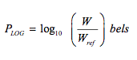
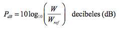

En este apartado introduciremos algunos conceptos muy utilizados en los sistemas de comunicaciones. Inicialmente se tratan las unidades logarítmicas que se emplean extensamente y, aunque al principio pueden resultar algo extrañas, es necesario que el estudiante se familiarice con ellas y se acostumbre a utilizarlas de manera habitual. Las unidades logarítmicas se empezaron a usar principalmente en los sistemas telefónicos y por ello, conservan aún ciertas connotaciones en ese contexto.
En los sistemas de comunicaciones es práctica común utilizar magnitudes logarítmicas en lugar de las magnitudes a que estamos acostumbrados. Hay, entre otras, dos razones para ello, una de carácter histórico que se remonta a los orígenes de la telefonía, en que se observó que la respuesta del oído humano a la intensidad sonora es de tipo logarítmico y otra de carácter práctico, ya que en comunicaciones se manejan magnitudes de voltaje, corriente y potencia en rangos muy amplios, por ejemplo, el voltaje de entrada a un receptor puede ser de unas fracciones de microvoltio y la salida, de varios voltios, lo que representa un rango de la señal de más de seis órdenes de magnitud que hace muy difícil la representación gráfica en una escala lineal. Algo similar ocurre con los rangos de potencia, corriente y frecuencia que se manejan en comunicaciones.
Siempre que se expresa una magnitud, ya sea dimensional o adimensional, se hace refiriéndola a una unidad de medida. Así, si se dice que un objeto tiene una longitud de 10 m, esto significa que es diez veces más largo que la unidad de medida empleada, en este caso 1 m. Si se dice que la ganancia de voltaje de un amplificador es de 20, esto quiere decir que la magnitud del voltaje de salida es 20 veces mayor que el voltaje de entrada. En el primer caso, la unidad de referencia fue 1 m; en el segundo, la ganancia se expresa sólo mediante una cifra sin dimensiones.
Relaciones logarítmicas de potencia
La relación logarítmica entre dos potencias, en bels puede definirse como:

Donde W es la potencia en watts, miliwatts, etc. y Wref es el valor de potencia usada como referencia. La expresión anterior no se utiliza y, en su lugar es más común la expresión de decibeles:

En lo sucesivo, omitiremos la designación log10 y usaremos simplemente log, ya que en todos los casos se trata de logaritmos base 10. Cuando se trate de logaritmos naturales se usará la designación ln. Aunque la potencia de referencia puede ser cualquiera, lo común es utilizar como tal 1 w, 1 mw (10-3 w), 1 pw (10-9 w) y 1 Kw (103 w), lo que da lugar a las siguientes designaciones:
- dBw → Nivel de potencia en dB, referido a 1 w.
- dBm → Nivel de potencia referido a 1 mw.
- dBpw → Nivel de potencia referido a 1 pw.
- dBKw → Nivel de potencia referido a 1 Kw
Cuando se expresan niveles de potencia en dB, es necesario especificar las unida- des de referencia utilizadas en las abreviaturas anteriores. Así, si se expresa que el nivel de potencia en un punto de un circuito es de, por ejemplo 8.5 dB, tal designación es errónea, ya que no puede saberse si esos 8.5 dB están referidos a 1 watt, a un miliwatt o a qué otro valor. La designación en dB sólo puede emplearse cuando se refiere a magnitudes adimensionales, por ejemplo la ganancia.